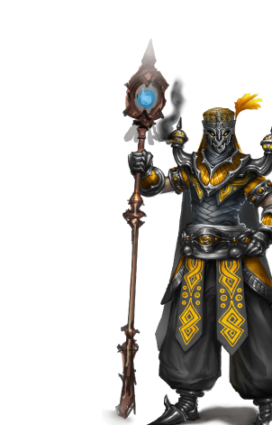

Академия
Маги – гордые искатели знания, стремящиеся выведать все о естественном порядке вещей. Превыше всего они ценят знание и учение, и величайшая их слабость в том, что жажда познания заводит их туда, где лучше не оказываться. Маги хитроумны, беспринципны и стараются взять от жизни всё – неудивительно, что другие народы полагают их высокомерными гордецами.
Другие названия: маги, волшебники, Серебряная Лига
Основные цвета: Оранжевый (цвет шафрана), золотой, кобальтовая синь (цвет маны)
Страна/Королевство: Семь Городов, затем – Серебряные Города
Столица: Аль-Сафир, Небесный Купол
Религия
Знание – вот истинная религия магов. Они не считают Драконов Стихий богами, для них они скорее высшие формы духовного бытия. Либо они лишь метафоры для упрощения понимания и направления силы, либо, возможно, реальные существа, которых со временем можно постичь.
Занимаясь исследованиями и экспериментами, маги верят, что смогут достичь могущества, равного могуществу драконов, как некогда сумел Сар-Илам. Для этого необходимо всю свою жизнь посвятить поискам знаний и накоплению силы. Эти ученые от магии ценят разносторонность и верят в силу познания.
Все живое несет в себе знание, и в даже самом крошечном цветке или зверьке есть та крупица мудрости, которая поможет познать сущее. Ступив на этот путь, некоторые маги начинают оправдывать эксперименты, допускающие жертвоприношение живых существ ради высшего знания.